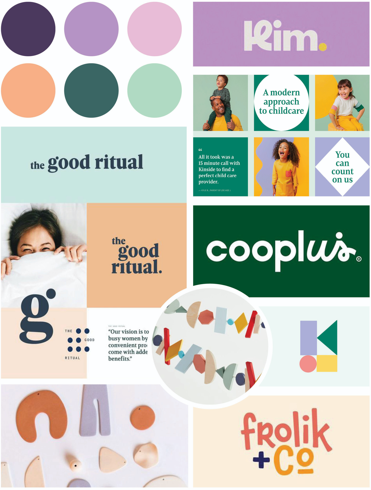
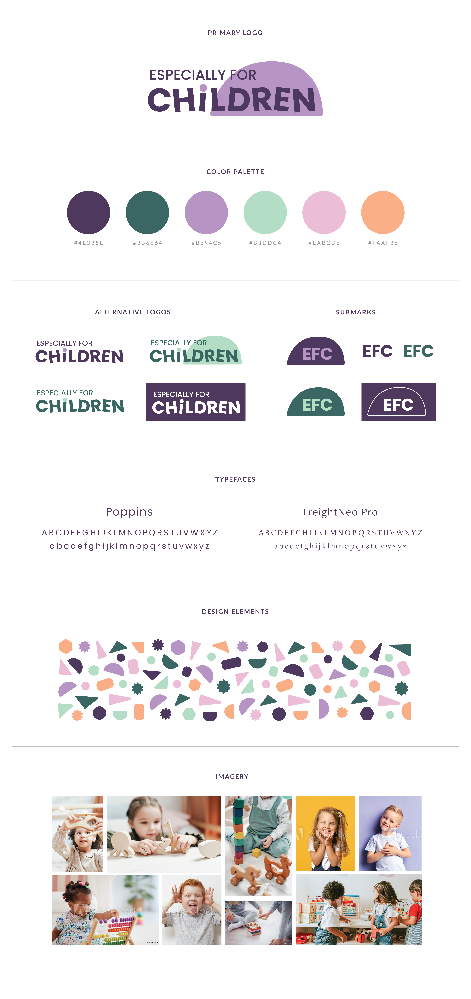
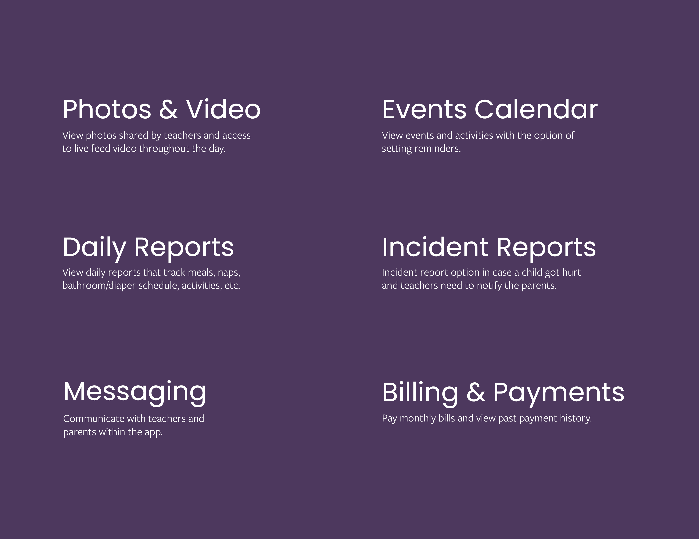

I chose to rebrand an existing child care organization: Especially for Children. EFC has multiple locations in the Twin Cities area where they provide quality child development programs for infants through preschoolers. Since they started in 1976, I believe a visual re-brand would be beneficial to both the teachers and parents at EFC and it would create a stronger brand identity overall. I want to create a simpler, more modernized look that incorporates new tools and systems to improve the EFC environment as a whole. Click here to view their current website and branding.
In order to strengthen the company’s presence and image, a more consistent and cohesive brand strategy is necessary. This included creating a new brand style guide and mobile app concept.
The primary audience will be working parents with young children in the Twin Cities area. I would like to empower working parents that need childcare for their young children. I’m not a parent yet, but as a very empathic person, I can only imagine how hard it would be to drop your child off at daycare and have to walk away while seeing them cry. When I first thought about rebranding a childcare organization, I mostly thought about just making it “look prettier” (which is something I find myself struggling with when it comes to graphic design). However, I’m realizing this project will be more than that. Besides creating a new visual identity for Especially for Children, I hope to (re)create a space and specifically an app that offers a variety of features aimed to bring comfort and convenience to parents.
I started by creating the mood board below to collect my thoughts, ideas, color schemes and vision. I wanted the branding to be simple and sophisticated, yet bright and playful at the same time.
Here is the final style guide.
I connected with my sister-in-law, Danielle. She is a single mom in her upper 30's and has an office job. She has a 5 year-old boy who has always been enrolled in childcare, since she has to work full time. She would be a potential user (and a member of the target audience) for the EFC childcare app.
First, I gave a brief explanation that I'm rebranding Especially for Children Childcare and creating an app for parents and teachers to use. Then I asked her what her initials thoughts were for a childcare app and what features she would expect it to include.
Her answer: "This would be a necessary app for parents and helpful for planning. When he was younger, I would have liked to know if he pooped and how many ounces of milk he had (and how many ounces of breast milk they had left over for him in the fridge). I wish mine had a live feed camera option where I could pop in the app to see what he's doing during random times of the day. Maybe an incident report option in case the kiddo got hurt and the teachers need to notify the parents. A calendar reminder for upcoming events (for example, Carsten has "Water Wednesday's" at his school and they like to remind us on Tuesday evenings to pack and suit and towel). Maybe a class list of some sort where I could get other mom's contact info for play dates. Definitely a place on the app where I can pay the monthly bill and view past payment history."
This prompted me to think about including a lot more features than I initially thought about (such as the live feed camera, incident report and calendar reminder). It was really great to get feedback from a mom that would really benefit from a childcare app.
After my research and interviewing a potential user, I defined the main app features/product requirements. I also realized that this app can have a numerous amount of features, but I chose to focus on some key features that parents would find important and use daily.
TBD: final mobile app design, motion graphic
The bibliography can be found here.
Minneapolis College of Art and Design MAGWD Capstone Project by Chrissie Nelson